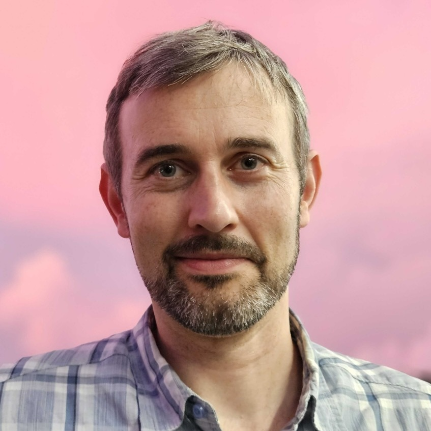

CVPR 2026 Workshop on 3D Scene Understanding for Vision, Graphics, and Robotics
Join us in the heart of the Rockies.
Morning, June 4, 2026 · Room 610/612
Overview
The rapid evolution toward next-generation embodied AI has driven remarkable convergence across computer vision, graphics, and robotics, with growing emphasis on robust 3D understanding for in-the-wild and real-world applications. Recent breakthroughs have introduced powerful 3D foundational models that demonstrate unprecedented zero-shot generalization across diverse 3D reconstruction tasks. Meanwhile, advances in dynamic reconstruction representations and vision-language-action (VLA) models have enabled practical real-to-sim-to-real transfer, language-grounded robotic manipulation, and navigation in real-world settings.
This workshop will focus on exploring how 3D foundational models enable robust, generalizable scene understanding for embodied systems, examining the interplay between geometric reconstruction, semantic grounding, and physical interaction to advance the next generation of vision, graphics, and robotics research.Invited Speakers

Schedule
All times are Mountain Daylight Time (MDT).
- 08:00 am - 08:30 am Opening Remark and Introduction
- 08:30 pm - 09:00 pm Invited talk: Andrew Davison (Imperial College London)
- 09:00 am - 09:30 am Invited Talk: Gerard Pons-Moll (University of Tübingen)
- 09:30 am - 10:00 am Invited Talk: Songyou Peng (Google DeepMind)
- 10:00 am - 10:15 am Coffee Break
- 10:15 am - 10:45 am Invited Talk: Andrea Vedaldi (University of Oxford)
- 10:45 am - 11:15 am Invited Talk: Ziwei Liu (Nanyang Technological University)
- 11:15 am - 11:45 pm Invited talk: Lingjie Liu (University of Pennsylvania)
Organizers


Senior Organizers
 |
||
| Andreas Geiger (University of Tübingen) |
Derek Hoiem (UIUC) |
Song-Chun Zhu (BIGAI, PKU, THU) |